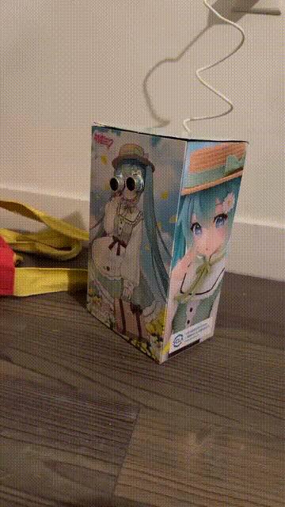
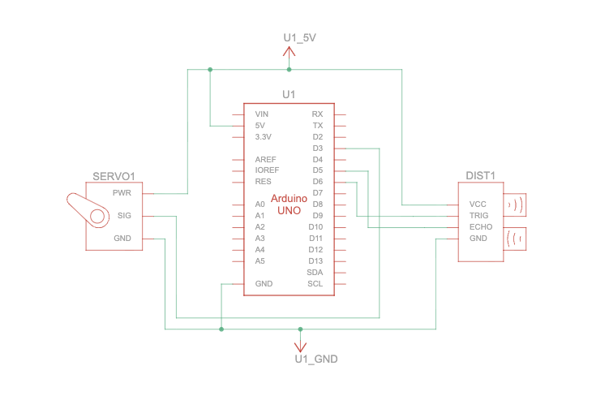
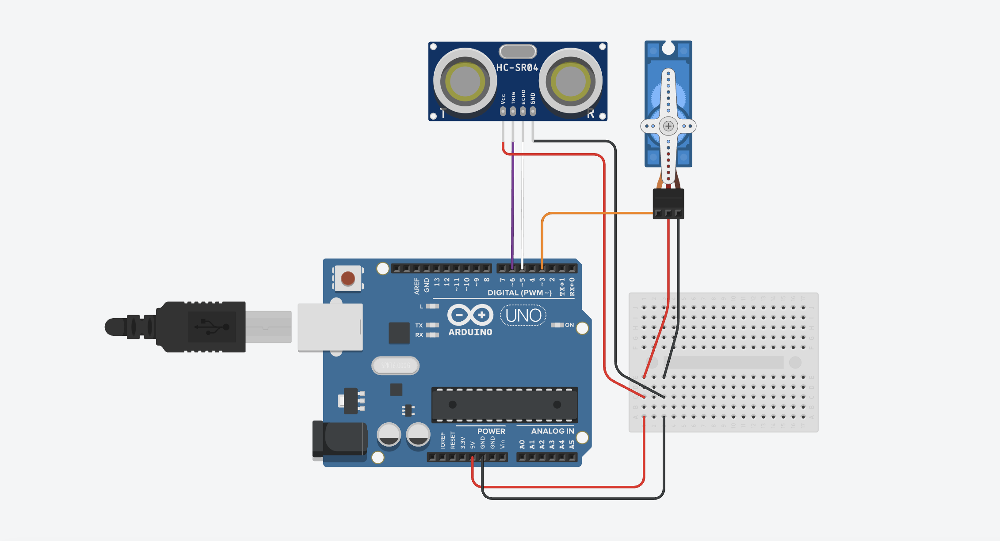
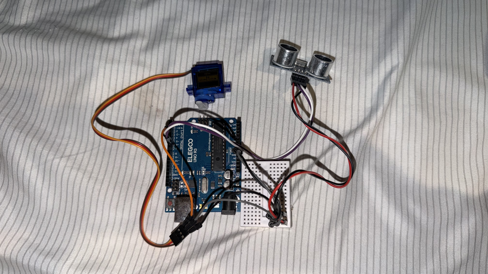

Final Project Documentation
Trubbish Can!
Christian Chung | HCDE 439 Physical Computing

The completed Trubbish Can in action!
Concept
Trubbish Can is a Pokémon-themed automatic trash bin that brings personality and fun to everyday waste disposal (and is currrently being reprinted due to improper scaling). Inspired by the Poison-type Pokémon Trubbish, this project transforms a mundane desk accessory into an interactive device that responds to user presence. When you bring trash near the opening, an ultrasonic sensor detects your hand and automatically opens the lid using a servo motor. After a brief delay, the lid closes on its own, keeping the bin tidy and contained.
The motivation behind this project was simple: my desk trash bin was unsightly and boring. By combining physical computing skills with 3D design and a dash of Pokémon nostalgia, I designed a functional product that makes throwing away trash just a little bit more enjoyable. This project integrates sensor input, motor output, and custom enclosures to demonstrate the complete product development cycle from concept to working prototype.
Demo (Temporary)

The Trubbish Can (Hatsune Miku) automatically opening when the camera is detected!
Technical Implementation
Bill of Materials
- Arduino Uno
- HC-SR04 Ultrasonic Sensor
- SG90 Micro Servo Motor
- AC Adapter
- Wires
- 3D Printed Parts
- Hot Glue
Circuit Schematic

Circuit schematic showing Arduino, ultrasonic sensor, and servo connections
Circuit Diagram

Physical circuit layout before integration into the enclosure
How It Works
The Trubbish Can operates using a simple sensor-actuator control loop. The HC-SR04 ultrasonic sensor continuously measures the distance to objects in front of the bin. The sensor works by sending out an ultrasonic pulse from the trigger pin, which reflects off nearby objects and returns to the echo pin. The Arduino measures the duration of this pulse and calculates the distance using the formula: distance = (duration/2) / 29, where the division by 2 accounts for the round-trip travel time, and 29 is the conversion factor from microseconds to centimeters based on the speed of sound.
When an object (hand or trash) comes within 50cm of the sensor and produces a valid reading (distance > 0), the Arduino commands the SG90 servo motor to rotate to 50 degrees, which opens the lid. The system then holds this open position for 3 seconds (3000 milliseconds) using a delay. This gives the user enough time to put trash into the bin. After the 3-second delay, or if no object is detected within range, the servo rotates to 160 degrees to close the lid. The main loop repeats every 60 milliseconds, which is the suggested measurement cycle for the ultrasonic sensor to avoid interference between readings.
The control logic is simple: it uses a conditional statement to check if the distance reading is both less than or equal to 50cm and greater than 0 (to filter out invalid readings). If this condition is met, the lid opens; otherwise, it closes. This means the lid will automatically close either when no object is detected or when the 3-second timer expires after opening.
The physical design features a 3D-printed enclosure styled after the Pokémon Trubbish, with the servo mounted internally and connected to the lid via a rotating arm. The ultrasonic sensor is positioned at the front of the bin, with the trigger pin connected to digital pin 6 and the echo pin connected to digital pin 5. The servo is connected to digital pin 3. Most of the electronics are inside the base, powered by a AC wall adapter for a constant 9V.
Arduino Code
#include// create servo object and define sensor pins Servo servo; int const trigPin = 6; int const echoPin = 5; void setup() { pinMode(trigPin, OUTPUT); // trig sends output pinMode(echoPin, INPUT); // echo receives reflected input servo.attach(3); // attach servo to pin 3 } void loop() { int duration, distance; // store duration and distance digitalWrite(trigPin, HIGH); // start pulse delay(1); // ... digitalWrite(trigPin, LOW); // end pulse duration = pulseIn(echoPin, HIGH); // record pulse input duration distance = (duration/2) / 29; // distance is half the duration divided by 29 (from datasheet) if (distance <= 50 && distance > 0) { // if distance < 0.5 meter and valid reading servo.write(50); // rotate to 50 deg (open) delay(3000); // ... } else { servo.write(160); // rotate to 160 (closed) } delay(60);// suggested measurement cycle }
Design and Assembly Process

3D printed components

Testing electronics before final assembly

Integrating the circuit into the 3D printed enclosure (Almost ready!)
Challenges and Solutions
Biggest Challenge: Logistics
I have been so busy with other obligations, I poorly planned time out to iterate on teh design and print parts
in time. No solution here besides better time managemnent in the future!
Challenge 1: CAD Design and Mechanical Integration
The mechanical design and CAD work ended up being the most difficult aspects of this project. Creating a
3D model that could accommodate all the electronics while maintaining the Trubbish aesthetic required multiple
iterations. Learning to translate the concept in my head into precise CAD geometry
was a steep learning curve. My first print was far too small and couldn't contain the components.
Challenge 2: Electronics Layout and Concealment
Figuring out how to arrange and hide the electronics within the enclosure was surprisingly challenging. I had to
plan the internal layout to ensure wires could reach between components without tangling, while also making sure
everything fit within the limited space. Despite my best efforts to make the electronics discreet, some components
still protrude from the enclosure. The ultrasonic sensor and some wiring remain partially visible.
Challenge 3: Servo Positioning
Determining the correct servo angles for open and closed positions required iteration. Through testing, I found
that 50 degrees provides a good opening angle while 160 degrees fully closes the lid. These angles work well with
the mechanical design of the lid arm and provide smooth, reliable operation.
Reflection
This project combines physical computing concepts with product design to create a functional and engaging product. The integration of sensor input and motor output demonstrates the cprinciples we learned throughout HCDE 439, and the custom 3D-printed enclosure (begins to) shows how electronics can be packaged into a complete product.
If I were to continue developing this project, I would want to dive deeper into the creative aspects and paint the exterior to more closely resemble Trubbish. Additionally, I woulda also want to explore different ways to implement the opening mechanism, like having the mouth open instead of the lid.
Overall, the Trubbish Can achieves its goal of transforming a mundane object into something fun and interactive. It demonstrates that with creativity and technical skills, even simple everyday products can be reimagined in delightful ways.